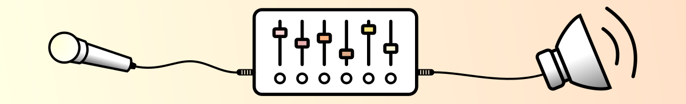
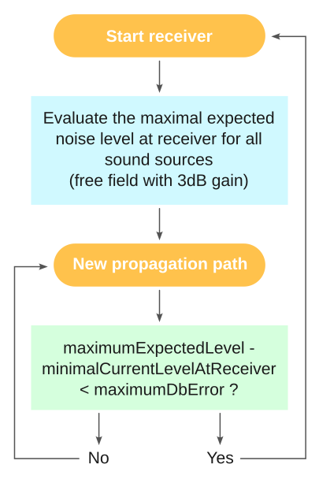

Acoustic parameters
In the different NoiseModelling Blocks, you will find many input parameters, mandatory or optional.
Below we list the most important ones, indicating, where necessary, the default values and those we recommend (from an acoustic point of view).

The following parameters may be found in the scripts dealing with noise emission or propagation (e.g Noise level from source, …)
Probability of occurrences
Parameter name:
confFavorableOccurrencesXXXXX(withXXXXX= evening, day, night, …)Description: Comma-delimited string containing the probability ([0,1]) of occurrences of favourable propagation conditions. Follow the clockwise direction. The north slice is the last array index (n°16 in the schema below) not the first one
Type: Double
Default value:
0.5, 0.5, 0.5, 0.5, 0.5, 0.5, 0.5, 0.5, 0.5, 0.5, 0.5, 0.5, 0.5, 0.5, 0.5, 0.5Recommended value:

Relative humidity
Parameter name:
confHumidityDescription: Humidity for noise propagation (%) [0,100]
Type: Double
Default value:
70Recommended value: depends on the average conditions at the location where you perform the simulation
Air temperature
Parameter name:
confTemperatureDescription: Air temperature (°C)
Type: Double
Default value:
15Recommended value: depends on the average conditions at the location where you perform the simulation
Order of reflexion
Parameter name:
confReflOrderDescription: Maximum number of reflections to be taken into account. Warning: adding 1 order increases the processing time significantly
Type: Integer
Default value:
1Recommended value:
1or2
Diffraction on horizontal edges
Parameter name:
confDiffHorizontalDescription: Compute or not the diffraction on horizontal edges
Type: Boolean
Default value:
FalseRecommended value:
True
Diffraction on vertical edges
Parameter name:
confDiffVerticalDescription: Compute or not the diffraction on vertical edges. Following Directive 2015/996, enable this option for rail and industrial sources only
Type: Boolean
Default value:
FalseRecommended value:
Maximum source-receiver distance
Parameter name:
confMaxSrcDistDescription: Maximum distance between source and receiver (meters)
Type: Double
Default value:
150Recommended value: Between
500and800

Maximum source-reflexion distance
Parameter name:
confMaxReflDistDescription: Maximum search distance of walls / facades from the “Source-Receiver” segment, for the calculation of specular reflections (meters)
Type: Double
Default value:
50Recommended value: Between
350and800

Ignore reflections close to the receiver wall
Parameter name:
confMinWallReflDistDescription: Optional maximum receiver-to-wall distance (meters) below which reflection cut profiles are ignored. When a receiver is located very close to a reflective wall, the reflected path may be physically unreliable or negligible. Setting this parameter filters out such reflection paths. Use
0to keep all reflections (filter disabled).Type: Double
Default value:
0(disabled)Recommended value: Set the distance you wish; classically below
2m. This parameter is typically used when assessing noise impact on people inside buildings, in order to avoid the last-reflection effect (approximately +3 dB).
Wall absorption coefficient
Parameter name:
paramWallAlphaDescription: Wall absorption coefficient [0,1] (between
0: “fully reflective” and1: “fully absorbent”)Type: Double
Default value:
0.1Recommended value:
0.1
Separate receiver level by source identifier
Parameter name:
confExportSourceIdDescription: Keep source identifier in output in order to get noise contribution of each noise source
Type: Boolean
Default value:
FalseRecommended value:
Thread number
Parameter name:
confThreadNumberDescription: Number of thread to use on the computer
Type: Integer
Default value:
0(0= Automatic. Will check the number of cores and apply -1. (e.g: 8 cores = 7 cores will be used))Recommended value:
0
Max Error (dB)
Parameter name:
confMaxErrorDescription: Threshold for excluding negligible sound sources in calculations. Default value: 0.1. This parameter is ignored if no emission level is specified or if you set it to 0 dB. This parameter have a great impact on computation time.
Type: Double
Default value:
0.1dBRecommended value:
0.1dB
Maximum error algorithm explanation
In order to reduce computation time, we can ignore far away sound source that will not change the noise level at the receiver location.
Before looking for propagation path, all sound sources are fetched in the radius of confMaxSrcDist then sorted by distance from the receiver position.
After each propagation path is found, we evaluate if the difference between the accumulated noise level of all previous sound sources with the expected maximum noise level at the receiver with all sound sources is greater than the maximum error parameter.
If the next sound sources contribution is negligible we move to the next receiver point.
Minimal and maximal values are over all emission periods specified on the sound sources. The maximal expected noise level value is updated after each sound source is processed.
